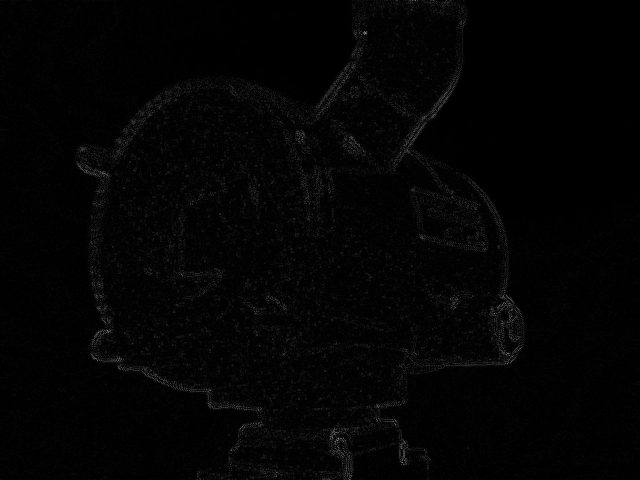

INTRODUÇÃO
Os problemas a seguir foram tirados do tutorial do professor Agostinho Brito
para a disciplina de Processamento Digital de Imagens do Departamento de
Engenharia de Computação e Automção (DCA) da Universidade Federal do Rio
Grande do Norte (UFRN).
As soluções foram desenvolvidas pelos aluno Sidnei Júnior e Massao
Henrique da graduação em Engenharia Mecatrônica
 Sidnei
Sidnei
Massao
Acessar
o site do professor Agostinho.
1. Regiões
Problema: "Implemente um programa regions.cpp. Esse programa deverá solicitar ao usuário as coordenadas
de dois pontos P1 e P2 localizados dentro dos limites do tamanho da imagem e exibir que lhe
for fornecida. Entretanto, a região definida pelo retângulo de vértices opostos definidos
pelos pontos P1 e P2 será exibida com o negativo da imagem na região correspondente."
Solução: Para tornarmos um pixel em negativo, basta recuperarmos
ele, diminuir de 255 e executar uma operação de cálculo de módulo. Assim, tendo como base o
algoritmo "pixel.cpp" (do site do professor), em que uma região é escolhida e então tal região
é pintada de preto, o que precisamos fazer para o novo programa é pedir pontos P1e P2 ao usuário,
definir limites dos nossos laços, que estão aninhados, gerando um algoritmo de complexidade
assintótica O(n2) e percorrer a região de interesse da matriz preenchendo os pixels com negativo.
 Chesterton - Original
Chesterton - Original
 Chesterton - Negativo
Chesterton - Negativo
Publicado em: 20 de Setembro de 2019 às 05h54
Ver código
2. Troca de regiões
Problema: "Implemente um programa
trocaregioes.cpp. Seu programa deverá trocar os quadrantes em diagonal
na imagem. Explore o uso da classe Mat e seus construtores para criar as
regiões que serão trocadas."
Solução:Inicialmente foi criado um vetor
rand com quatro posições, de 0 à 3, contendo o número correpondente a
cada um dos quadrantes (1,2,3,4). Posteriormente, utilizando a função
"random shuffle", trocamos as posições dos elementos de rand de forma
aleatória, pois precisaremos acessar esse vetor para podermos embaralhar
os quadrantes originais da imagem em questão. Com isso definido, foi
útlizado o contrutor de "Mat"para criar sub-matrizes que compõe a matriz de
entrada da imagem, sendo essas submatrizes dividida
Chesterton - Original
 Chesterton - Troca
Chesterton - Troca
Publicado em: 20 de Setembro de 2019 às 06h15
Ver código
3. Rotulação
Problema: "Observando-se o programa labeling.cpp
como exemplo, é possível verificar que caso existam mais de 255 objetos na cena,
o processo de rotulação poderá ficar comprometido. Identifique a situação em que
isso ocorre e proponha uma solução para este problema."
&&
"Aprimore o
algoritmo de contagem apresentado para identificar regiões com ou sem buracos
internos que existam na cena. Assuma que objetos com mais de um buraco podem
existir. Inclua suporte no seu algoritmo para não contar bolhas que tocam as
bordas da imagem. Não se pode presumir, a priori, que elas tenham buracos ou não."
Solução:Uma solução viável para o problema de excedentes de regiões da quantidade de 255 rótulos
é separar em categorias os objetos, e, cada uma das categorias irá receber
um tom específico de cinza. Por exemplo os objetos com buraco podem receber
o tom de cinza 10, enquanto que os objetos sem buracos podem receber o tom de
cinza 11, de forma que podemos ter várias categorias de objetos em
nossa imagem, a saber, 256 categorias.
&&
O algorítmo para realizar
a rotulação com buracos e sem buracos foi feito da seguinte forma: Primeiro
foi retirado todas as bolhas que tocavam as bordas da imagem, pois dessas não
é possível afirmar se tem ou não buracos. Mudamos o fundo da cena para um outro
tom de cinza para diferenciar dos buracos que estariam com tom de cinza 0.
Percorrendo a imagem sempre que encontrarmos o tom de cinza 0 encontramos
uma bolha com buraco. Se o tom de cinza anterior a esse for 255, então
encontramos um objeto que ainda não foi rotulado e aplicamos o floodfill
nele com um tom de cinza que especificarmos para objetos com furo. Após essa
contagem percorrer mais uma única vez a imagem pintando as bolhas sem buraco com
o o tom de cinza especificado para esse grupo. Por fim, contamos todas as bolhas
com e sem buraco e exibimos.
 Bolhas - Original
Bolhas - Original
 Bolhas - Rotulado
Bolhas - Rotulado
Publicado em: 20 de Setembro de 2019 às 07h30
Ver código
4. Equalização
Problema: "Implemente um programa equalize.cpp. Este deverá, para cada imagem capturada, realizar a equalização do histogram antes de exibir a imagem. Teste sua implementação apontando a câmera para ambientes com iluminações variadas e observando o efeito gerado. Assuma que as imagens processadas serão em tons de cinza."
Solução: Usando a função de equalização disponivel na biblioteca do OpenCv foi realizada a operação esperada, o restante do programa seguiu a lógica do código apresentado no tutorial.
Livro - Original
Livro - Equalizado
Publicado em: 27 de Setembro de 2019 às 17h55
Ver código
6. Laplace do Gaussiano
Problema: "Implemente um programa laplgauss.cpp. O programa deverá acrescentar mais uma funcionalidade ao exemplo fornecido, permitindo que seja calculado o laplaciano do gaussiano das imagens capturadas. Compare o resultado desse filtro com a simples aplicação do filtro laplaciano."
Solução:Seguindo o algoritmo filtroespacial.cpp,
acrescentamos uma flag que irá habilitar uma condicional, de forma que, dado que
a flag é 0, são executados os procedimentos normais de cálculo e aplicação de
filtro, no contrário, ou seja, com a flag igual a 1, isso significa que o caso
escolhido foi o de aplicação de filtro de gaussiano seguido do laplaciano.
Para isso, logo no case guardamos nas matriz mask a máscara correspondente ao
filtro de Gauss, de forma que quando o algoritmo executa a condicional em que
a flag é 1, já é aplicado esse filtro, guardando o resultado em result. Assim,
sobrescrevemos mask com o filtro laplaciano e então aplicamos ele ao resultado
anterior.
Sidnei - Original

Sidnei - Laplace
Sidnei - LaplGauss
Comparando as imagens podemos ver que a aplicação do Laplaciano sobre o filtro
Gaussinao permite capturar mais detalhes das bordas da imagem
Publicado em: 22 de Setembro de 2019 às 15h24
Ver código
7. Tilt-Shift
Problema: "Utilizando o programa exemplos/addweighted.cpp como referência, implemente um programa tiltshift.cpp. Três ajustes deverão ser providos na tela da interface: um ajuste para regular a altura da região central que entrará em foco; um ajuste para regular a força de decaimento da região borrada ; um ajuste para regular a posição vertical do centro da região que entrará em foco. Finalizado o programa, a imagem produzida deverá ser salva em arquivo".
Solução: Para podermos criar o efeito de Tilt-Shift temos que utilizar de três matrizes distintas combinadas. Primeiro precisamos borrar a imagem original, e para isso iremos utilizar um filtro de média,
pois esse borramento é importante para o ajuste do efeito. Posteriormente temos que criar uma matriz
ponderada por uma função já pré modelada para que possamos multiplicar elemento a elemento com a nossa matriz borrada de acordo com a região de interesse para tirar o efeito de borramento dessa região. E por ultimo precisamos aplicar o ponderamento inverso nas regiões de borda da faixa escolhida para dar um efeito suave na visualização da região não borrada em relação a região borrada, ocasionando o efeito Tilt-Shift na combinação das matrizes.
As figuras a seguir mostram o antes e depois da aplicação do efeito.
Paissagem - Original
Paissagem - TiltShift
Publicado em: 23 de Setembro de 2019 às 16h27
Ver código